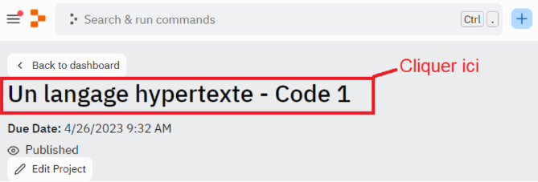

Durée : 1 h
Prérequis : avoir étudié le cours jusqu’ici
Environnement de travail : Replit
Les objets sont des entités, des ensembles de propriétés, qui sont l’unité même de ce qu’on appelle « Programmation Orientée Objet ». Certains objets vous sont déjà familiers, comme les objets Number, ou Array. Mais, pour bien comprendre leur fonctionnement, et dans une optique de maîtriser la POO en JavaScript, nous allons faire ensemble le point sur les objets dits « natifs ».
Il existe deux catégories d’objets en JS : les objets natifs et les objets qu’on peut appeler « personnalisés » ou « définis par l’utilisateur ». Les objets natifs sont des objets accessibles par défaut dans n’importe quel environnement JavaScript. En revanche, les objets personnalisés sont des objets qu’un utilisateur définit, en créant son propre type.
L’objectif de ce cours est donc avant tout de nous mettre au point sur les principaux objets natifs en JavaScript. Dans la première partie, nous nous mettrons au point sur le concept d’objet en POO, en faisant des rappels, et en introduisant de nouvelles notions. Puis dans la seconde partie, nous aborderons les principaux objets natifs en JS. Nous introduirons en complément le mot clé « this » et nous aborderons l’utilisation de prototypes.
Ce cours sera constitué de nombreux exemples de codes que vous pourrez tester via Replit. Il vous permettra de vous familiariser davantage avec la notion d’objet en POO, ce qui vous sera essentiel dans votre parcours de développeur.
Pour avoir accès au code et à l'IDE intégré de cette leçon, vous devez :
Une fois ces étapes effectuées, nous vous conseillons de rafraîchir votre navigateur si le code ne s'affiche pas.
En cas de problème, redémarrez votre navigateur et vérifiez que vous avez bien accepté les cookies de connexion nécessaires avant de recommencer la procédure.
Pour accéder au code dans votre cours, cliquez sur le nom du lien Replit dans la fenêtre. Par exemple :
